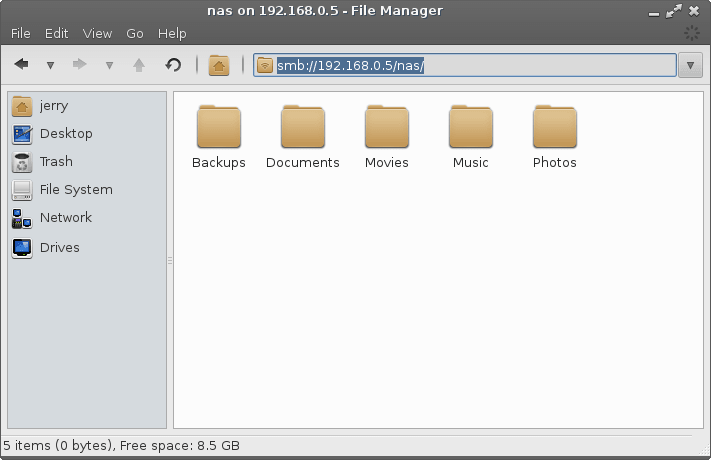
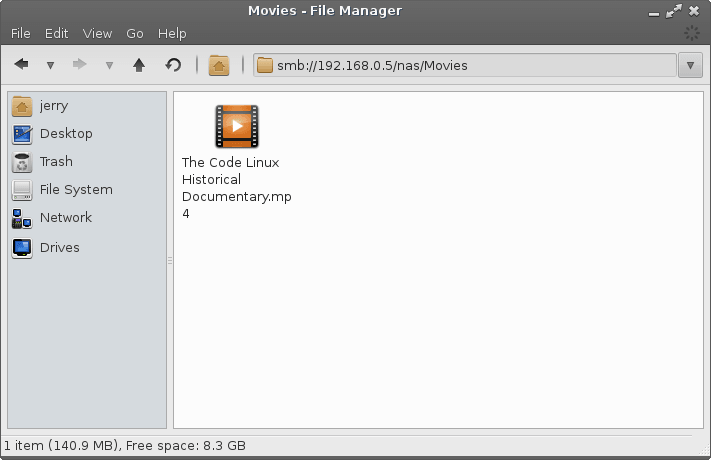
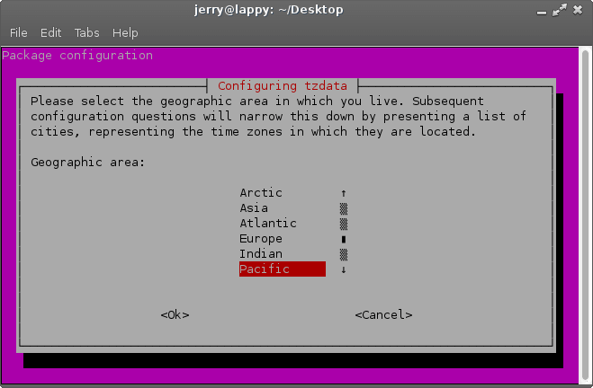

Network Connections & Network Shares
Network Connections:
Wireless Connections
USB Broadband Modem
Accessing a NAS device
Network Shares
Accessing you Linux Lite Shares from Windows
Accessing you Windows Shares from Linux Lite
Setting the Time and Date
Changing your timezone
Connecting to the Internet with Wired
For the most part, you shouldn't have to configure anything in Network Connections if you are connected to your router with an ethernet cable. Your router is most likely already set up to give you an IP address automatically. So in this tutorial we will instead focus on connecting to your router with a static IP address.
Make sure Enable Networking has a tick beside it. The first step is to right click on the network tray icon and select Edit Connections. You may be asked for your password before you go to change any of your Network Connection settings.
A box will pop up with a number of tabs across the top, make sure to select the Wired tab.
Click on the Add button and a new box will pop up.

Select the IPv4 Settings tab and then select Manual from the Method drop down.
Now click on the Add button, click into the first field - Address and populate it with the relevant IP details from your network (see your Router Manual for details) this will vary from brand to brand of router. Continue to populate the remaining Netmask and Gateway fields with the relevant IP details from your network.
Address - The IP address you will give to your Linux
Lite computer (refer to your router manual for the exact
details)
Netmask - Nearly always 255.255.255.0 (refer to
your router manual for the exact details)
Gateway - This is the IP address of your router (refer to
your router manual for the exact details)
Once you have entered all the IP details, click on Save and then Close on the final box.
Connecting to the Internet with Wireless
In the system tray (near the clock, bottom right hand side of your screen) if you have no connection at the moment you will see a diagonal broken line with a red cross next to it. This denotes that there is no connection currently. Left click on the icon, if your wireless is working, you should have a list of wireless networks in your area, select your network. If you cannot see any wireless networks at all, your wireless device driver may not be installed, or for example your wireless switch on your laptop is in the Off position. If after you have checked this there are still no wireless networks showing, go to Menu, Settings, Install Drivers and see if your wireless device is listed. If it is, install the driver for it and continue with this tutorial.
A box will pop up asking for your wireless password. If you would like to view your password while you type it, tick the 'Show password' box to ensure that you have entered your wireless password correctly.
After a successful connection, you should see a tray icon like the one shown below with 4 bars in total. The signal strength is displayed by the number of bars. The more bars in bold, the stronger the signal. In this example we are connected with 3 out of the 4 bars.
Many homes now use a NAS or Network Attached Storage device.
In this tutorial we'll show you how to access all your media
files, then show you how to play them across your network with
VLC.
When this set up is complete, you'll also be able to copy and
paste files between your NAS and your pc just like you did in
Windows or Mac.
First thing you need to do is find the IP address of your NAS. You may know this already or your NAS manual will show you how to find this. Once you have your NAS's IP address, open up your home folder and type in the following:
smb://192.168.0.5 where 192.168.0.5 is your NAS's IP address.
Put in the username of the NAS, in most cases it is
admin, but again refer to your manual for the correct
information.
Put in the workgroup (Domain) name, and finally
the password for your NAS. Place a dot in Remember
forever if you want it to save your details.
You should now see all of your NAS folders.

Lets look inside the Movies folder for this device, as you can see I have a movie file in there called The Code Linux Historical Documentary.mp4

Before we can start playing media files across the network,
we need to set up VLC so that it can access and play files
remotely.
In Linux Lite, click on Menu, Multimedia, VLC Media
Player. With VLC open, click on Tools,
Preferences.
In the window that pops up, in the bottom left click on All. Then on the left, expand Input / Codecs, Access modules, SMB. Then put in your NAS's username, password and finally the SMB domain (Workgroup). Click on Save to finish and close VLC.

Now that we've given VLC the network credentials it needs to access your NAS, we can browse and play our files.
If you have the Huawei E220 then this should work out of the
box. This is a very common modem and we encourage you to use
this model if it is possible.
Right click on the Network Connections tray icon and select New
Mobile Broadband connection.
Configure your settings according to the details from your 3g service provider.
If you need more help, please view this forum thread
here.
At this stage no other modems have been tested.
Network Shares: Menu, System, Network Share Settings
Assuming you have already set up shares on your Windows
computer, please read through the following guide.
Accessing shares between Linux and Windows computers
historically has been difficult, it doesn't always work out. In
this tutorial we hope to make the process a little easier for
you. First step, we
need to set up your Linux Lite shares.
Create a folder in your home folder and place into it files that you want to share with your Windows computer.
Right click on your home folder, Create Folder. Now give your new folder a name, in this example we'll use the name 'share'.
Next we need to tell Windows who we are going to login as
to access our Linux Lite shares.
Open up a terminal and type:
| sudo smbpasswd -a name |
where name is your Linux Lite username.
After that, you'll be asked to enter your Linux Lite password
twice.
Now, in the same terminal do:
| sudo leafpad /etc/samba/smbusers |
where you see:
| <name> = “<name>” |
replace name with your Linux Lite username in each of the
brackets, eg.
| <jerry> = “<jerry>” |
Save and Close the file, and close the terminal.
You will only ever need to do this part once.
Now click on Menu, System, Network Share Settings, Edit Network Shares, and follow very carefully the onscreen instructions. Do not miss any steps and take your time. A text editor will pop up with content similar to that of the example below. Only change the text that is in bold.
| #======================= Global Settings
==================================== [global] workgroup = WORKGROUP server string = Linux Lite Shares netbios name = lappy security = user encrypt passwords = true username map = /etc/samba/smbusers map to guest = bad user guest account = nobody dns proxy = no #======================= Share Definitions =================================== [linuxliteshare] path = /home/%U/share available = yes valid users = %U %G write list = %U browsable = yes public = no writable = yes guest ok = no read only = no printable = no locking = no strict locking = no |
There is no need to change any of the other settings.
Doing so may cause the shares not to work.
You only need to change:
| WORKGROUP - must equal the workgroup name on
the Windows machine. netbios name is the name of the Linux Lite computer, eg. in a terminal where you see, jerry@lappy:~$ lappy is the netbios name. path = the path to your share folder on Linux Lite that we want Windows to see, ONLY change the last name eg. /home/%U/share share is the name of the folder on Linux Lite you are sharing in your home folder. %U is the same as your username, leave the %U as it is. Now change ONLY the word share to the name of the folder you created in the first step of this tutorial. |
Save and Close the file.
Now that everything is set up, click on Menu, System, Network
Share Settings, Restart Network Share Services.
| NOTE: Anytime that you modify your share settings you must click on Restart Network Share Services for the changes to apply. |
If at any stage you want to add more share folders, you can simply add more blocks like in the example below:
| #======================= Global Settings
==================================== [global] workgroup = WORKGROUP server string = Linux Lite Shares netbios name = lappy security = user encrypt passwords = true username map = /etc/samba/smbusers map to guest = bad user guest account = nobody dns proxy = no #======================= Share Definitions =================================== [linuxliteshare] path = /home/%U/share available = yes valid users = %U %G write list = %U browsable = yes public = no writable = yes guest ok = no read only = no printable = no locking = no strict locking = no [linuxliteshareVideos] path = /home/%U/Videos available = yes valid users = %U %G write list = %U browsable = yes public = no writable = yes guest ok = no read only = no printable = no locking = no strict locking = no [linuxliteshareDownloads] path = /home/%U/Downloads available = yes valid users = %U %G write list = %U browsable = yes public = no writable = yes guest ok = no read only = no printable = no locking = no strict locking = no |
Don't forget to do Menu, System, Network Share Settings, Restart Network Share Services to apply the new share settings.
Accessing you Linux Lite Shares from Windows
Go to your Windows machine, in this example we'll use Windows XP.
Click on Start, Run and type in the netbios name of your Linux Lite computer preceded by 2 backslashes:
eg. \\lappy
A username and password dialogue box will pop up, enter in the user and password we created earlier.
And here we see our Linux Lite computer share folder:
All that's left to do is to double click on the Linux Lite share and we will be inside the share folder. Now you can copy and paste files to your Linux Lite computer.
Accessing your Windows shares from Linux Lite
Go to your Windows machine and find the ip address. To do this, open a command prompt and type in ipconfig.
Usually the results at the top has your ip address listed. In
the above example, the ip address is: 192.168.0.8
Make a note of this ip address.
Now go back to your Linux Lite computer, and open your home folder.
| NOTE: If by the end of this Shares tutorial you
are still not seeing any shares, try restarting both
machines. Also note that sometimes it can take a while before the shares appear. |
In the address bar, type in: smb://ipaddressofwindowspc where ipaddressofwindowspc is the actual numbered ip address of your Windows computer.
If everything went to plan, you should now be prompted for your Windows username, domain or workgroup and your Windows password.
Windows username - Windows workgroup name - Windows password

Now you can copy and paste files to your Windows computer.
NOTE: If the ip address method does not work eg. smb://192.168.0.8 try smb://linuxlite where linuxlite is your netbios name.
NOTE: If you are still not having any luck with either method, try NitroShare, a cross-platform network sharing application for Windows, Mac and Linux. You can view a video tutorial on it here. Another method you could consider is setting up an FTP server on your Windows computer and connecting to it with Filezilla, available from Menu, Install/Remove Software.
Open up a terminal and type:
| sudo hwclock --hctosys |
followed by your password. This will get the time from your bios and set it. You can also use:
| sudo ntpdate ntp.ubuntu.com |
which will sync your clock with an online server (requires an internet connection).
In the future we will be offering a simple Time and Date application that will also allow you to change your timezone.
Open up a terminal and type:
| sudo dpkg-reconfigure tzdata |
Enter your password and use the arrows to select your timezone. When you have finished,
tab to <Ok> and hit enter.
